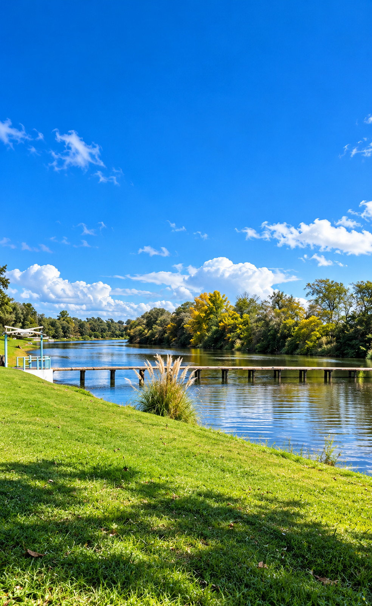
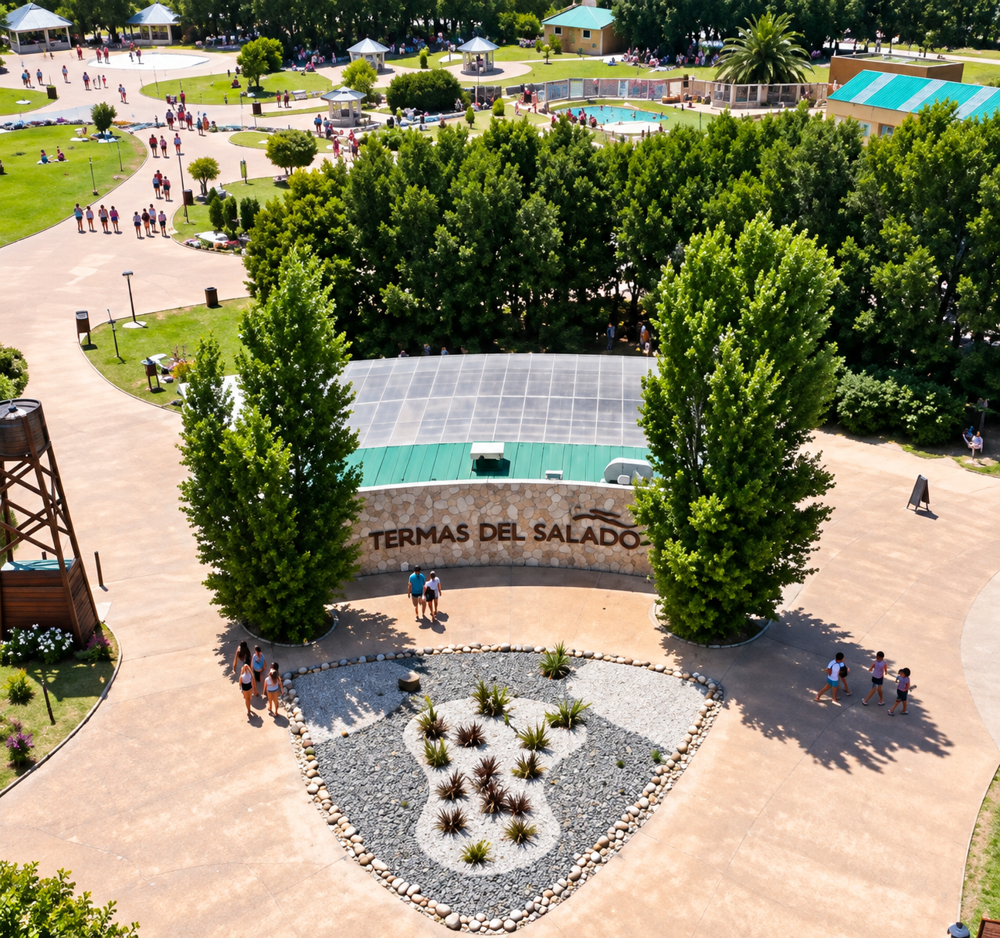
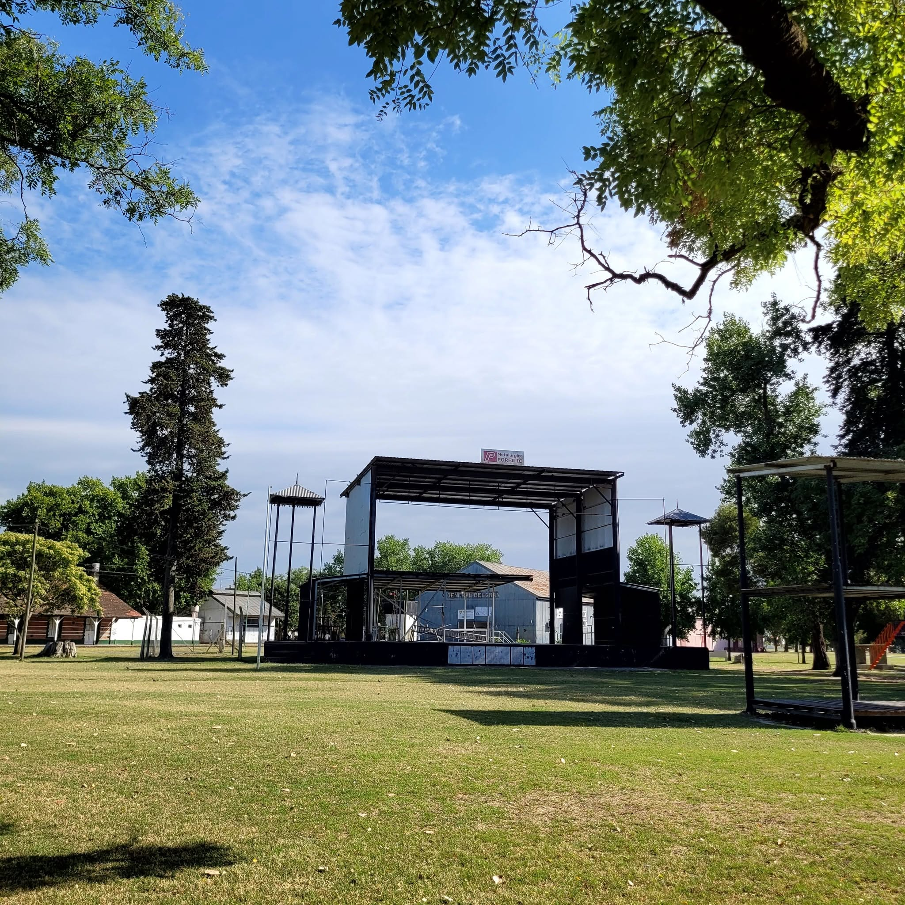
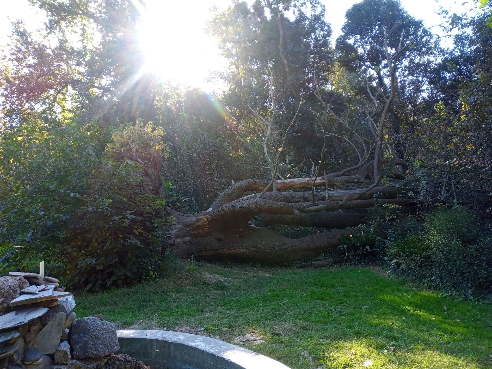

Costanera del río Salado
Un espacio para disfrutar de la naturaleza, caminar, descansar y contemplar el paisaje junto al río.
Cómo llegarEncontrá. Elegí. Disfrutá.
Conocé los lugares y atractivos que hacen especial a nuestra ciudad.

Un espacio para disfrutar de la naturaleza, caminar, descansar y contemplar el paisaje junto al río.
Cómo llegar
Un complejo termal para disfrutar de piscinas, momentos de relajación y actividades recreativas.
Cómo llegar
Un espacio verde tradicional para pasear, descansar y disfrutar del centro de la ciudad.
Cómo llegar
Un espacio natural ideal para disfrutar de caminatas, descubrir la vegetación y conectarse con la tranquilidad del entorno.
Cómo llegar